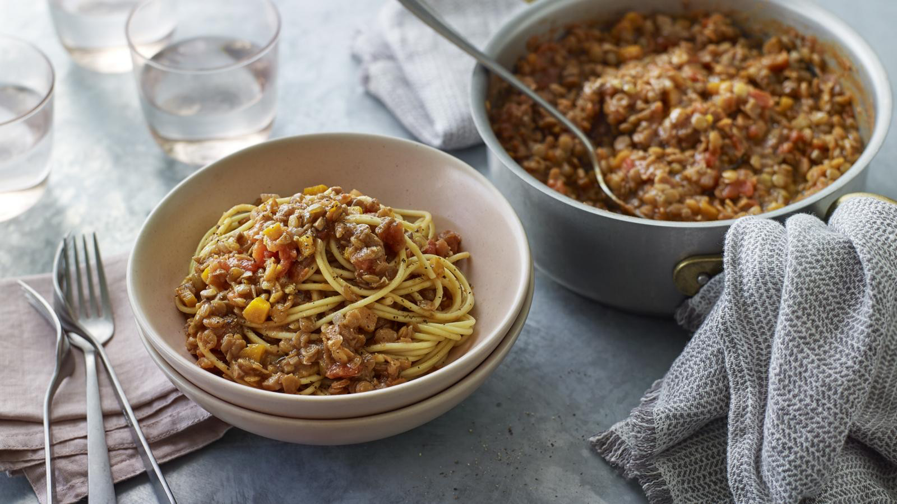

Lentil Bolognese

Description
A hearty, spaghetti-based dish that is perfect for cold days when you have the time to cook.
I was taught this recipe by my family and do not know if it has a specific source.
Ingredients
- Onion (one)
- Carrot (one)
- Mushrooms (80g)
- Garlic (3-5 cloves)
- Red Lentils (half cup)
- Chopped Tomatoes (one can)
- Vegetable Stock (250ml)
- Thyme (1tsp)
- Basil (1sp)
Instructions
- Chop and fry the carrot in a sauce pan for three minutes.
- Chop the onion, garlic, and mushrooms, and add them all to the pan. Fry for three minutes.
- Add the red lentils and fry for one minute.
- Add the chopped tomatoes, vegetable stock, thyme, and basil. Stir and bring to a boil.
- Simmer and cover. Leave to cook for 30-40 minutes, stirring occasionally.
- Serve with spaghetti.